悬浮球
悬浮球会出现在屏幕的最右侧，按住悬浮球不动，可以拖到屏幕任意位置，如图所示
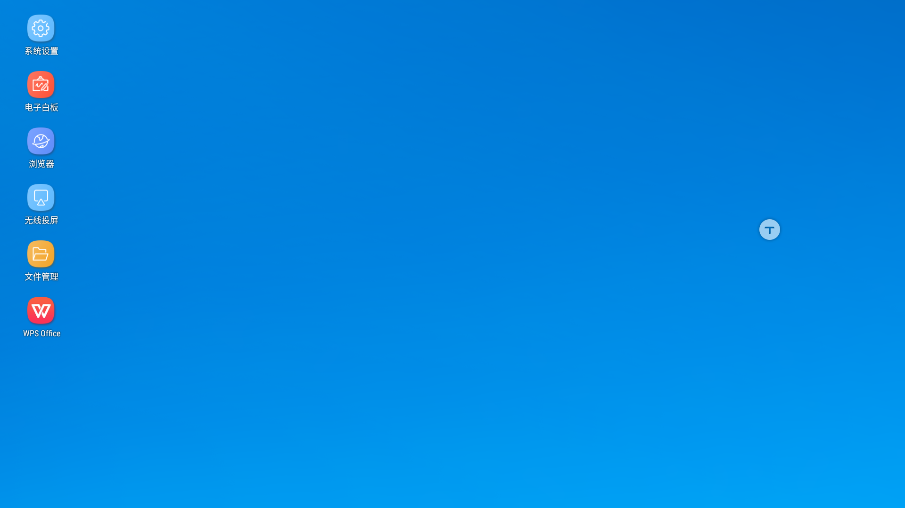打开悬浮球
轻点悬浮球，经过一个流畅的动画悬浮球的按钮打开，如图所示
打开批注
点击如图所示的按钮，即可打开批注
画笔
点击批注按钮之后会自动进入画笔，可以在屏幕上随意写画，还可以调整画笔的粗细和颜色
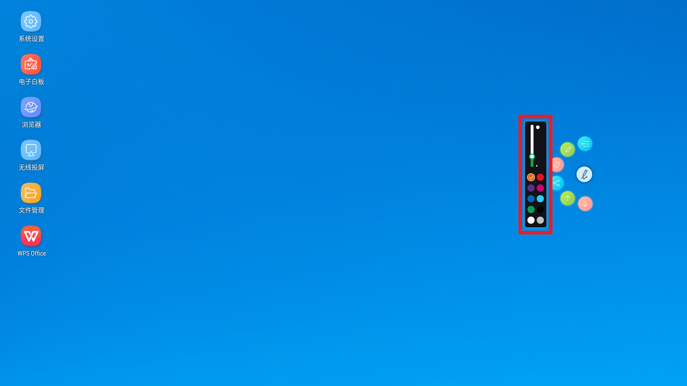在屏幕上写字
打开橡皮擦
点击橡皮擦按钮，即可打开橡皮擦
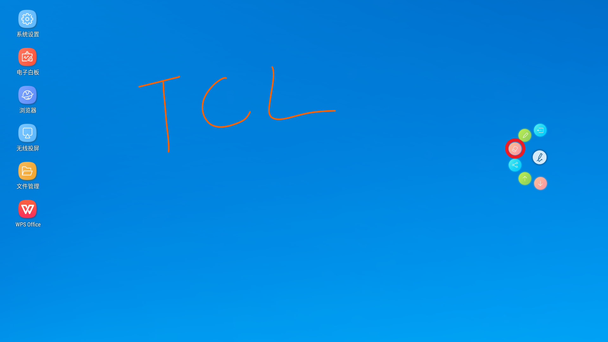橡皮擦擦除
按住某个位置不动，会出现橡皮擦，拖动橡皮擦擦除想要清除的位置即可
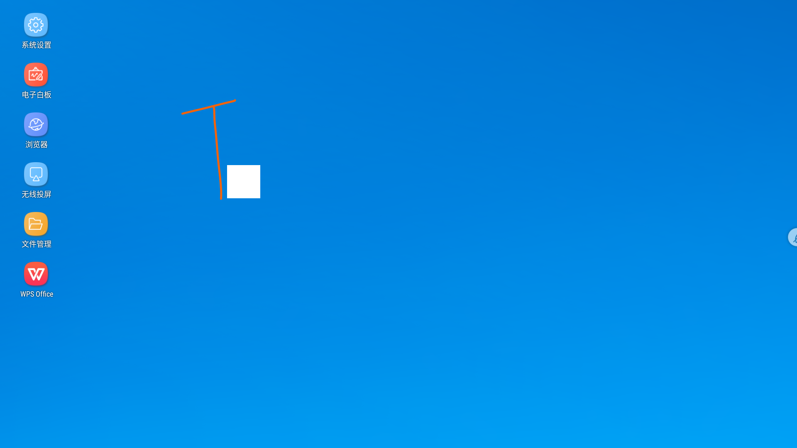分享批注
点击图中分享按钮即可打开分享界面
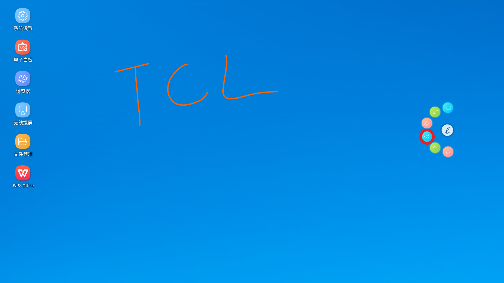在批注分享界面可以选择不同的保存方式，可以选择保存到云端或者保存到u盘，或者通过二维码分享，还可以进行邮件发送
批注翻页
点击图中所标识的按钮即可对批注进行上下翻页
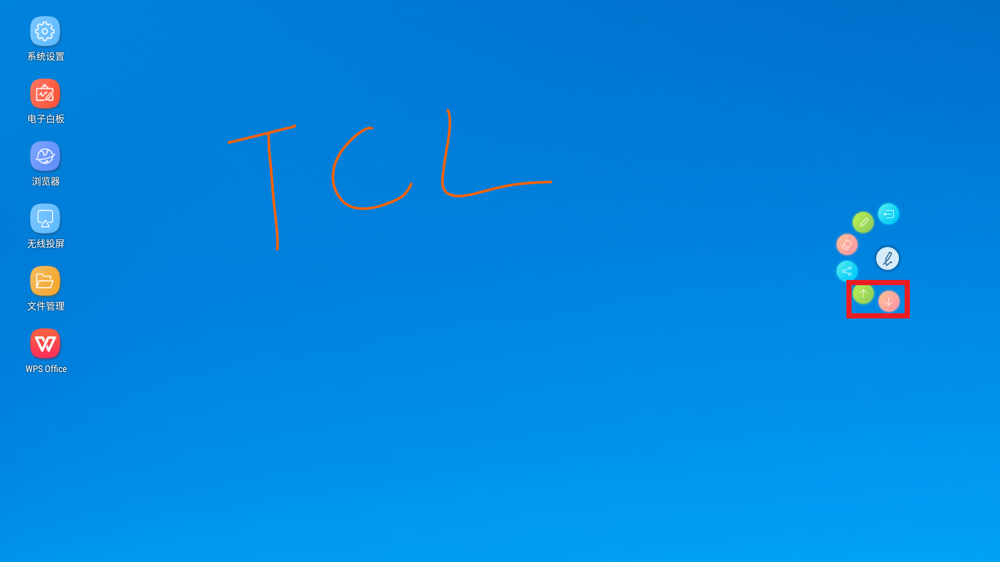退出批注
点击图中所标识的按钮即可退出批注
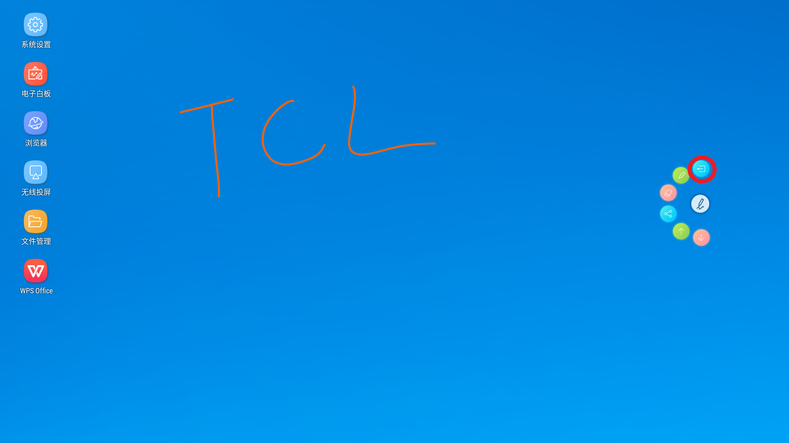切换信源
点击图中所标识的按钮即可快速切换当前信源
设置
点击图中所标识的按钮即可快速打开设置界面
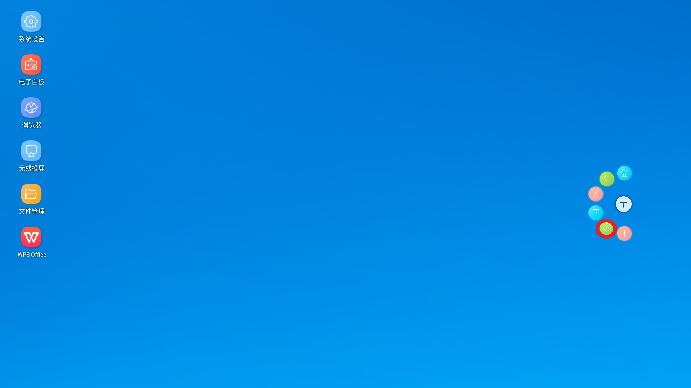添加应用
点击图中所标识的按钮即可添加应用按钮到悬浮球
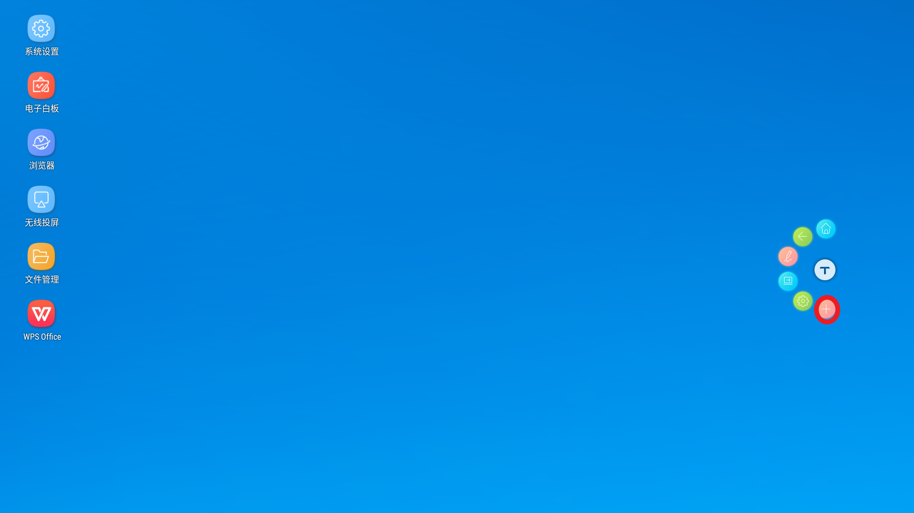点开添加按钮后会出现一个应用弹窗，显示可以添加到悬浮球的应用
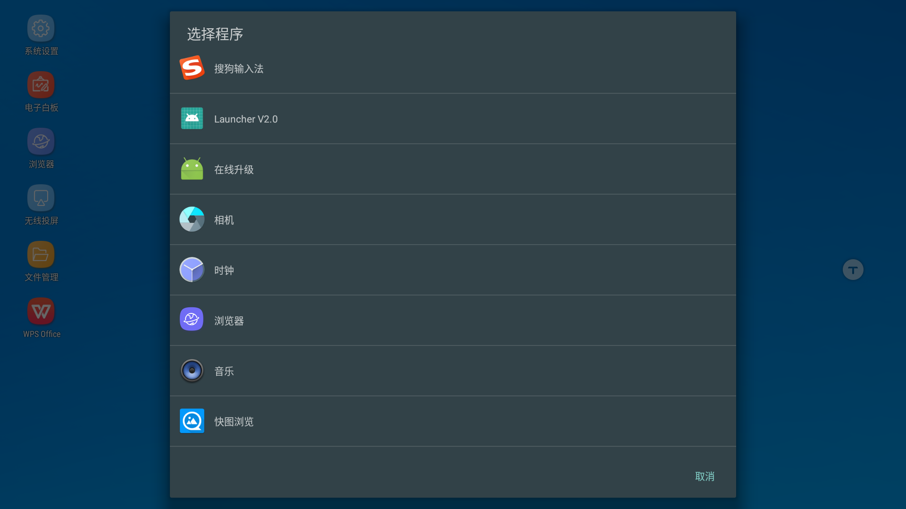home键
点击图中所标识的按钮即可退出所有程序回到桌面
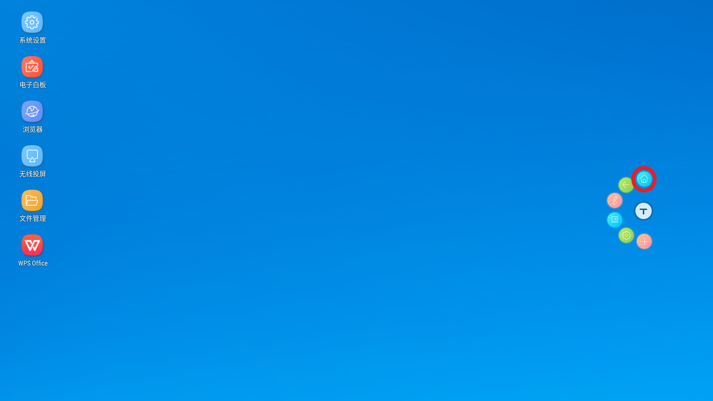返回键
点击图中所标识的按钮即可返回上一步操作，返回键